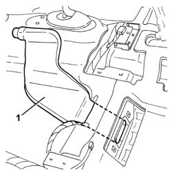

5010B47 side air duct to rear seat(one), lh or rh - r r
- Path
- Procedures > 50 AUXILIARY UNITS > 5010 CLIMATE CONTROL - MISCELLANEOUS > 5010B heating/ventilation air pipes and ducts > 5010B47 side air duct to rear seat(one), lh or rh - r r
- Kind
- repair procedure (removal / refitting; the operation number is the code)
- Applies to
- all engines; all production periods
- Interactive page
- https://sloeber94.github.io/elrnDB-a147/en/#/3025388
Applies to: all engines; all production periods
 Removing
Removing
 Refitting
Refitting7040L10 cabin floor carpet - r r
1. Remove the duct.

Applies to: all engines; all production periods
Refitting
RemovingCheck that the duct is not damaged.
Place the duct in position.